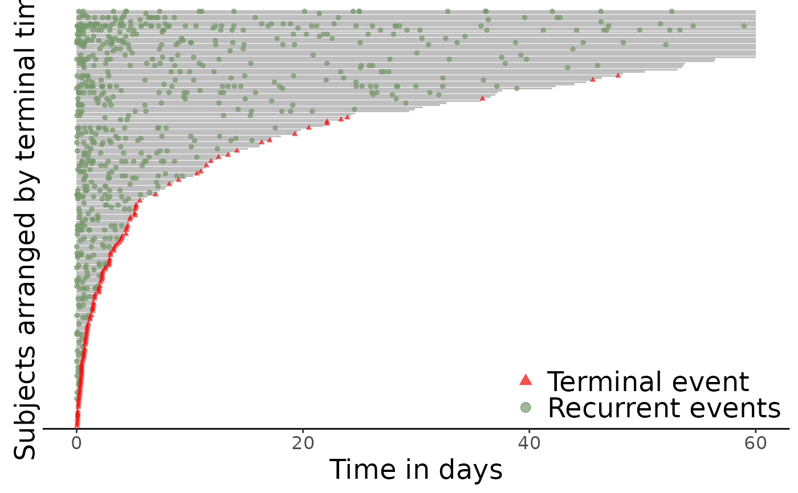
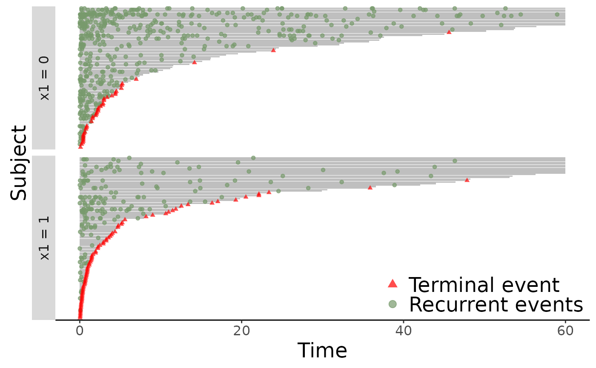
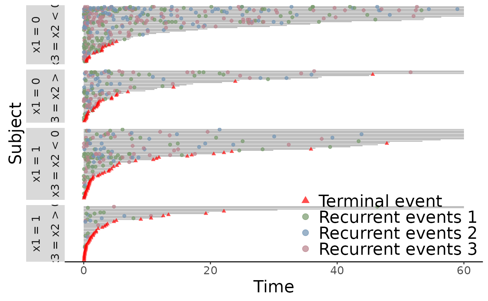

Plot the event plot for an Recur object.
The usage of the function is similar to that of plot.Recur() but with more flexible options.
a formula object, with the response on the left of a "~" operator,
and the predictors on the right.
The response must be a recurrent event survival object as returned by function Recur().
an optional data frame in which to interpret the variables occurring in
the "formula".
an optional character string specifying whether the event plot is sorted by the subjects' terminal time. The available options are
increasingsort the terminal time from in ascending order (default). This places longer terminal times on top.
decreasingsort the terminal time from in descending order. This places shorter terminal times on top.
nonepresent the event plots as is, without sorting by the terminal times.
an optional logical value indicating whether to plot in calendar time.
When calendarTime = FALSE (default), the event plot will have patient time on the x-axis.
a list of control parameters. See Details.
graphical parameters to be passed to methods.
These include xlab, ylab, main, and more. See Details.
A ggplot object.
The argument control consists of options with argument defaults to a list with
the following values:
customizable x-label, default value is "Time".
customizable y-label, default value is "Subject" for event plot and "Cumulative mean" for MCF plot.
customizable title, the default value is "Recurrent event plot"
when mcf = FALSE and
"Sample cumulative mean function plot" when mcf = TRUE.
customizable label for terminal event, the default value is "Terminal event".
customizable legend title for recurrent event, the default value is "Recurrent events".
customizable label for recurrent event type,
the default value is NULL.
between 0 and 1, controls the transparency of points.
The xlab, ylab and main parameters can be specified
outside of the control list.
data(simDat)
plotEvents(Recur(t.start %to% t.stop, id, event, status) ~ 1, data = simDat,
xlab = "Time in days", ylab = "Subjects arranged by terminal time")

## Separate plots by x1
plotEvents(Recur(t.start %to% t.stop, id, event, status) ~ x1, data = simDat)

## For multiple recurrent events
simDat$x3 <- ifelse(simDat$x2 < 0, "x2 < 0", "x2 > 0")
simDat$event <- simDat$event * sample(1:3, nrow(simDat), TRUE)
plotEvents(Recur(t.start %to% t.stop, id, event, status) ~ x1 + x3, data = simDat)
